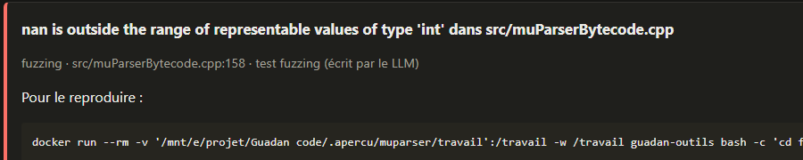
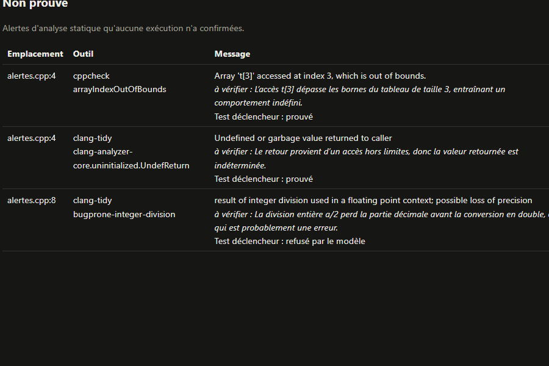
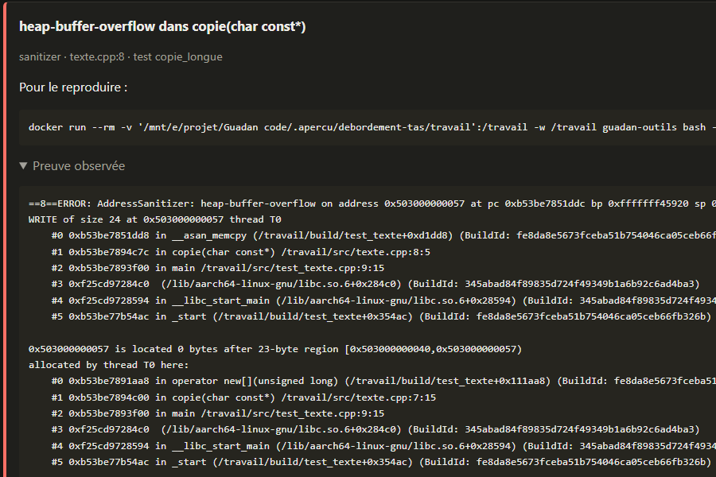
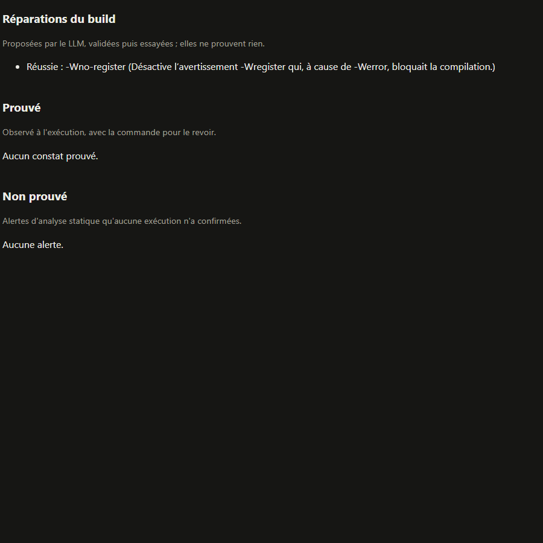
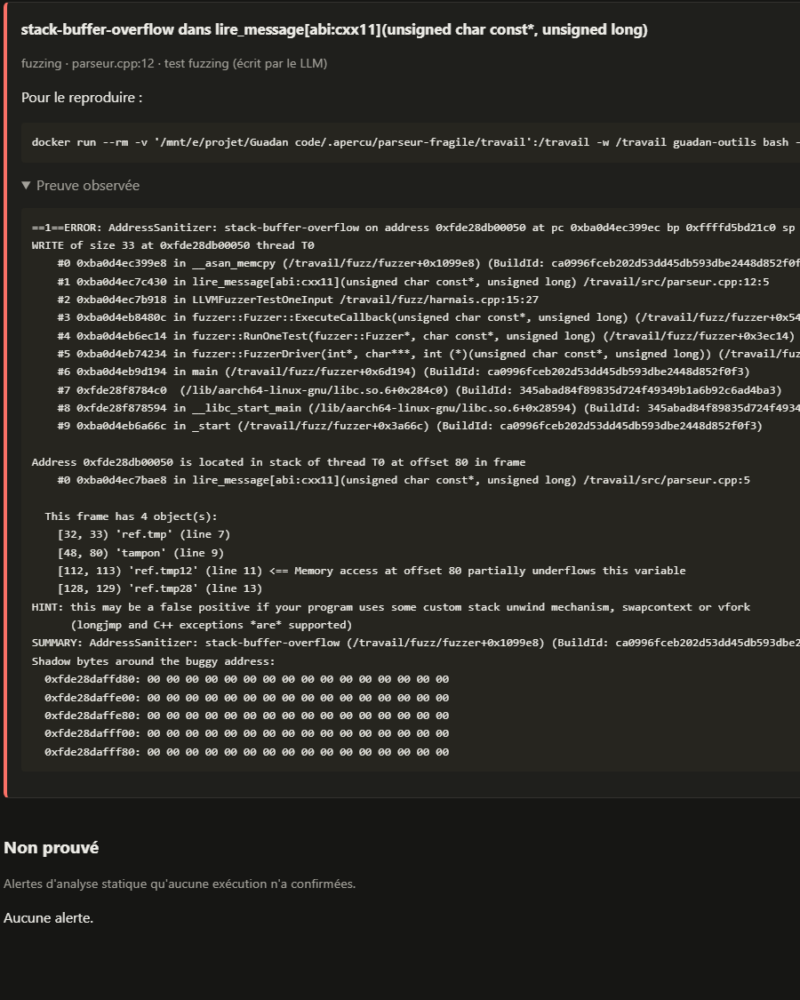
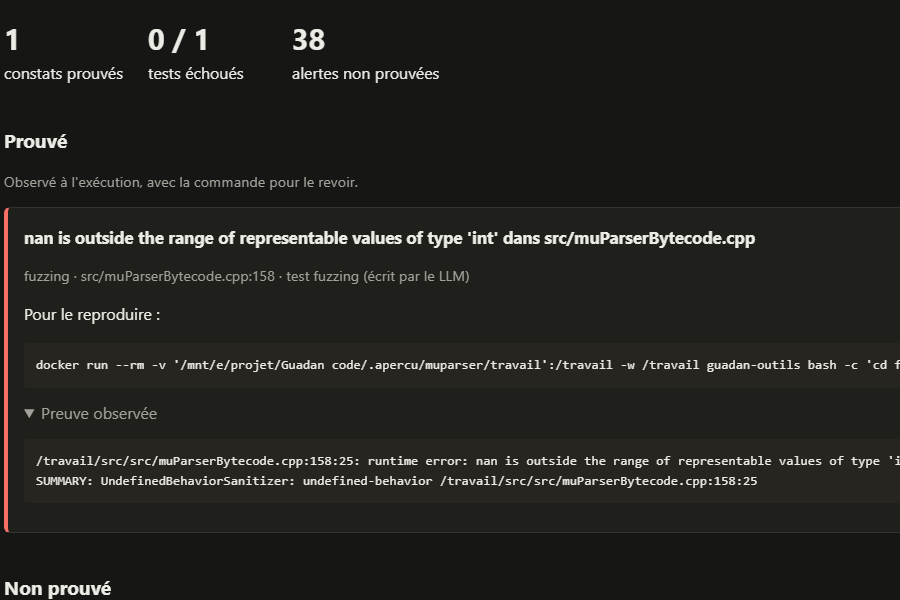

Prouvé

ou rien.
Voir le code sur GitHub
guadan compile votre dépôt C/C++ sous sanitizers, le teste, le fuzz, et ne déclare prouvé que ce qu'il a vu se produire, avec la commande pour le revoir.
Tapez ce que le fuzzing a tapé.
Comportement indéfini : UBSan arrête muparser.
muParserBytecode.cpp:158:25: runtime error: 8.8e+09 is outside the range of representable values of type 'int'muparser 9e28c71, pré-calcul de x && y par (int)x && (int)y. Trouvé par guadan en deux minutes de fuzzing ; corrigé depuis en amont (430ce5c).
Calculé dans votre navigateur avec la règle de C++ que muparser enfreignait : un nombre
flottant converti en int doit tenir entre −2 147 483 648 et 2 147 483 647.
Trente-huit alertes, et la faille ailleurs.
Sur cette version de muparser, cppcheck et clang-tidy ont signalé : dangerousTypeCast, shiftTooManyBitsSigned, funcArgOrderDifferent, invalidPrintfArgType_sint, nullPointerOutOfMemory sept fois, optin.cplusplus.VirtualCall sept fois, narrowing-conversions treize fois, switch-missing-default-case, unhandled-self-assignment, integer-division, empty-catch, macro-parentheses et quelques autres : trente-huit alertes, aucune sur la ligne 158.
D'abord, une copie du dépôt.
Le dépôt est copié dans un dossier de travail : l'original n'est jamais modifié.
$ python3 -m guadan analyse ./muparser --sortie /tmp/rapport
guadan: analyse de ./muparser…
copie : travail/src (dossiers de build existants ignorés)# phase A — réseau autorisé, pour les dépendances
cmake -S src -B build -G Ninja -DCMAKE_BUILD_TYPE=Debug \
-DCMAKE_C_COMPILER=guadan-clang -DCMAKE_CXX_COMPILER=guadan-clang++ \
-DCMAKE_CXX_FLAGS='-fsanitize=address,undefined -fno-sanitize-recover=undefined -g'
-- Configuring done# phase B — docker run --network none --cap-drop ALL --memory 4g
cmake --build build [17/17] Linking CXX executable
ctest --output-junit ctest.xml 1/1 tests passés
cppcheck, clang-tidy 38 alertes
./fuzz/fuzzer -max_total_time=120 #110059 exécutions
==UBSan== muParserBytecode.cpp:158:25: runtime error1 constat prouvé 38 alertes non prouvées
8.8e+09 is outside the range of representable values of type 'int'
fuzzing · src/muParserBytecode.cpp:158
docker run --rm -v /tmp/rapport/travail:/travail -w /travail guadan-outils \
bash -c 'cd fuzz && ./fuzzer crash-minimal'- Copie
- Phase A
- Phase B
- Rapport
Combien d'analyses par jour ?
12analyses par jour
200 000 jetons par jour (offre gratuite de Groq pour gpt-oss-120b) divisés par les jetons d'une analyse. Mesuré : 1 157 pour réparer un vieux build, 7 294 pour fuzzer un petit parseur, 15 366 pour muparser avec fuzzing et tri. Sans clé, guadan tourne sans limite, sans LLM.
Ce que guadan promet.
Le modèle ne décide jamais.
Seul du code classe un constat comme prouvé : un test qui échoue, un rapport de sanitizer, un plantage rejoué. Le LLM répare les builds, écrit les harnais, trie les alertes ; il ne juge pas.

Le code analysé est hostile.
Phase d'exécution sans réseau, sans variable de l'hôte, sans capacité Linux, avec mémoire et durée limitées. Les sorties sont échappées dans le rapport, et un harnais qui redéfinit un symbole est refusé.

Les vieux projets compilent.
Le -Werror du projet est neutralisé, et les échecs de build sont réparés : zlib manquant, mot-clé register refusé par C++17. Chaque réparation est validée, essayée, puis écrite dans le rapport.

Gratuit de bout en bout.
Sans clé, tout fonctionne sauf le LLM. Avec l'offre gratuite de Groq, guadan écrit ses propres harnais : ici un dépassement de pile trouvé dans un parseur après 9 170 exécutions.

Mesuré, limites comprises.
Évalué sur douze bugs réels de BugsC++, versions boguée et corrigée, avec les chiffres et les échecs publiés tels quels.

Rien n'est envoyé : la page écrit les commandes à lancer sous Linux ou WSL, avec Docker.